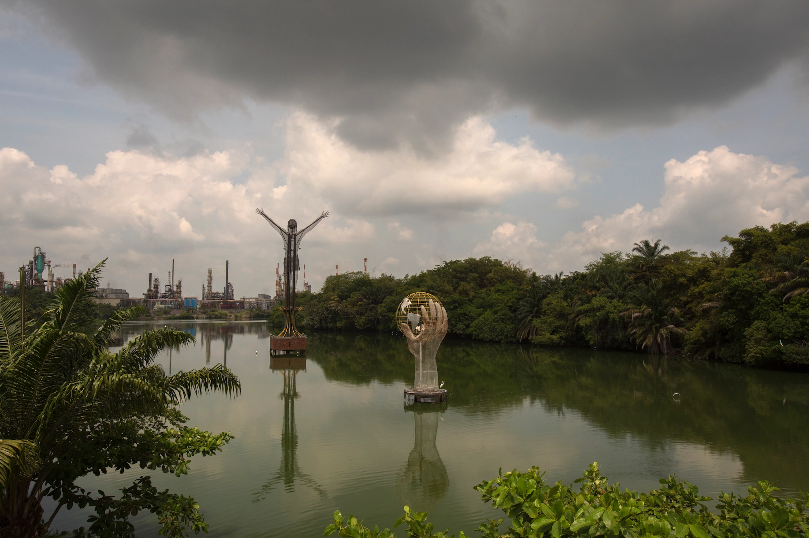
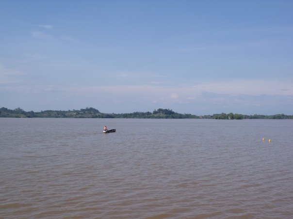
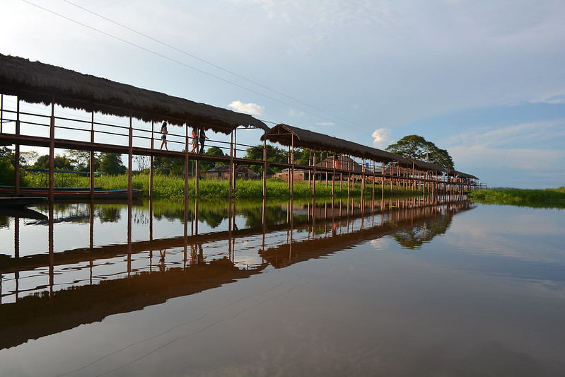

Barrancabermeja
![]()
Reseña historica
Barrancabermeja es una ciudad colombiana ubicada en el departamento de Santander, en la región Andina del
país. Su historia se remonta a la época precolombina, cuando la región estaba habitada por diversas tribus
indígenas, entre ellas los yariguíes, quienes fueron los principales pobladores del territorio.
Durante la época colonial, Barrancabermeja fue un importante centro de comercio debido a su ubicación
estratégica a orillas del río Magdalena, que permitía el transporte de productos hacia el interior del país.
Sin embargo, la ciudad no fue fundada oficialmente hasta el año 1922, cuando el gobierno colombiano decidió
establecer una estación de ferrocarril en la zona.
A partir de ese momento, Barrancabermeja comenzó a experimentar un gran crecimiento económico gracias a la
explotación de petróleo, que se convirtió en la principal actividad económica de la región. La compañía
petrolera estadounidense Standard Oil of New Jersey (hoy conocida como ExxonMobil) estableció una refinería
en la ciudad en 1921, lo que impulsó el desarrollo industrial de la zona.
Durante la segunda mitad del siglo XX, Barrancabermeja fue escenario de diversos conflictos sociales y
políticos, como
la violencia entre los grupos guerrilleros y las fuerzas armadas, que afectaron gravemente la economía y la
seguridad de
la región. Sin embargo, la ciudad logró recuperarse y hoy en día es uno de los principales centros
industriales y
comerciales del departamento de Santander. Además, cuenta con importantes atractivos turísticos como el
Parque Nacional
Natural Serranía de los Yariguíes y el Malecón del Río Magdalena.

Turismo
Santander es uno de los departamentos más llamativos de la tierra colombiana, gracias a su riqueza natural,
arquitectónica y cultural. Entre sus principales atractivos se encuentra el municipio de Barrancabermeja.
Este lugar, denominado el puerto petrolero más importante de Colombia, cuenta con una gran variedad de
destinos
para los amantes de la naturaleza, la aventura y la gastronomía. Sus coloridos paisajes, que se reflejan en
las
transparentes aguas de los ríos como el Magdalena, logran atraer la atención de los visitantes.
Ciénaga San Silvestre
|
|

|
En el municipio de Barrancabermeja se sitúa la Ciénaga San Silvestre, una de las fuentes hídricas más
importantes
del departamento de Santander. Este lugar, que abastece cerca de 300.000 mil habitantes del Magdalena Medio,
es
considerado uno de los pulmones de Colombia, debido a la biodiversidad que lo rodea.
Desde hace algún tiempo, la ciénaga se ha convertido en uno de los principales sitios para hacer turismo en
Barrancabermeja, gracias a sus complejos hídricos. Por ello, es posible realizar algunos deportes acuáticos
como
canotaje.
Igualmente, para los amantes de los paisajes, este es un lugar ideal para tomar fotografías profesionales y
observar
la variedad de aves endémicas que habitan en la zona.
|
|
Corregimiento El Llanito
|
|
A 30 minutos de Barrancabermeja, se encuentra el corregimiento El Llanito, un destino de encanto natural y de
exquisita gastronomía,
que ha logrado abrirle las puertas al turismo.
En este corregimiento santandereano, la mayoría de su población se dedica a la pesca artesanal. Por esta
razón,
sus platos típicos
se basan en diferentes tipos de pescados. Además, sus hermosos paisajes y la calidad de su gente,
proporciona a
los visitantes una estadía tranquila e inolvidable.
Si quieres conocer más sobre esta actividad tradicional y hacer turismo vivencial con las comunidades, no
dejes
de incluir este lugar en tu itinerario.
|

|